Bulk Create
After pushing the button "Bulk Create" a table pop-ups, which enables the user to create one or many objects including their attributes.
It is necessary to define an object name, all other attributes can be left empty.
After pushing the button on the right down side "Create Structure" the object(s) will be created.
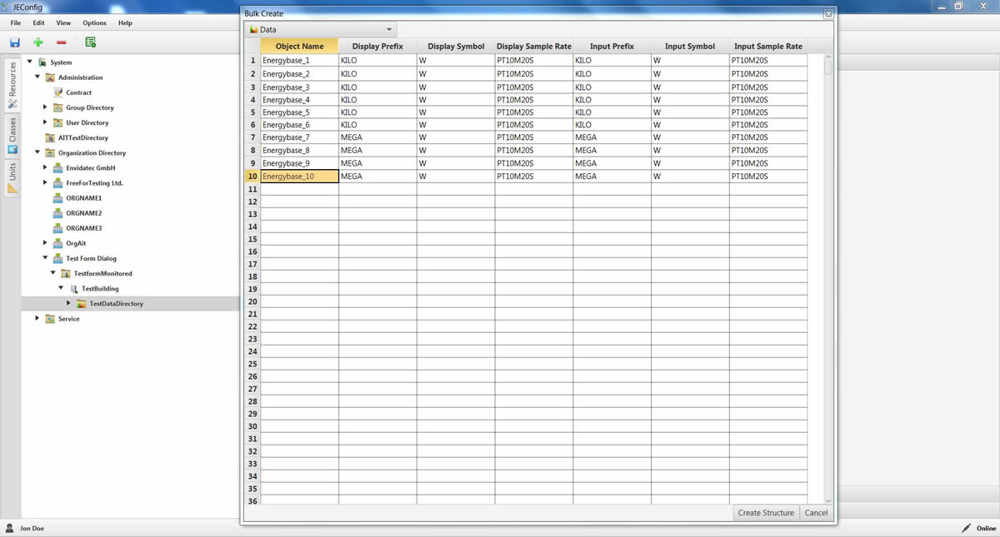
The created objects are on the picture red marked.
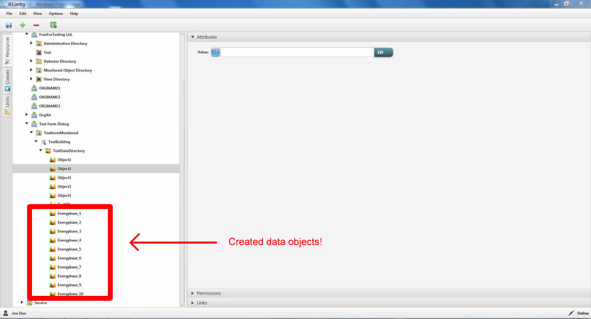
It is possible to export / import data from / to Excel Sheets.
This can be done simply using copy/paste (ctrl + c ,ctrl + p) functions.
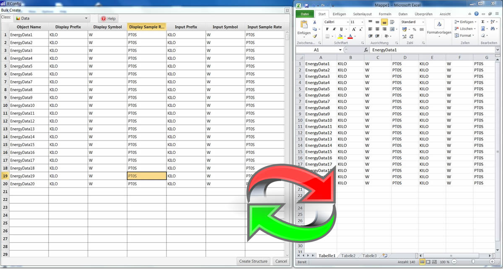
Bulk Edit
Bulk Edit button enables the user to rename the object or make changes in the attributes.
After applying the necessary changes, pushing the button "Edit Structure" save the changes.
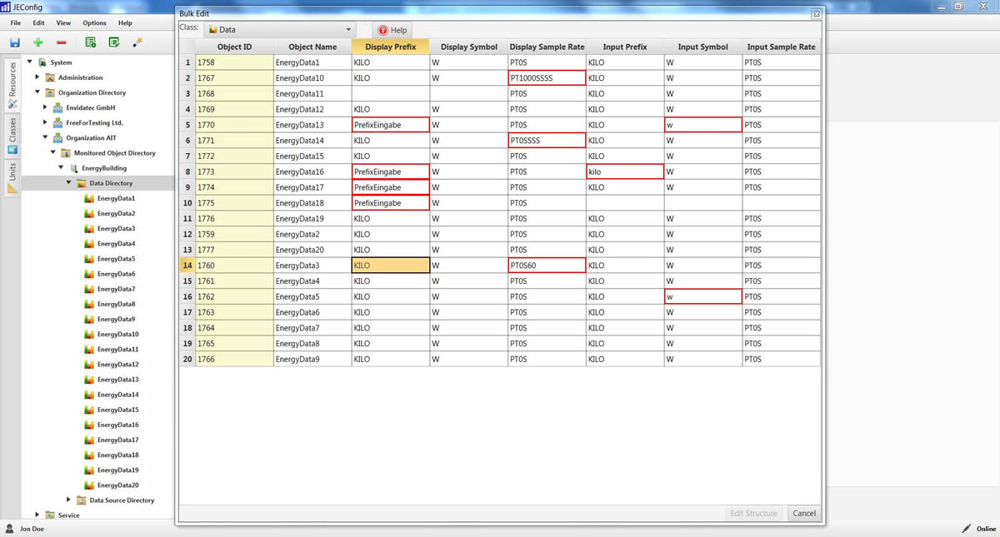
In special case of a Data Object :
First of all as usual the object will be renamed.
After that every coloum will be checked , if there is an input , which does not match the criteria of regarding attribute this area will be marked red.
Matching criteria for every column is listed below :
Display/Input Prefixes
NONE, ZETTA, EXA, PETA, TERA, GIGA, MEGA, NANO, PICO, KILO, HECTO, DEKA, DECI, CENTI, MILLI, MICRO, NANOPICO, FEMTO, ATTO, ZEPTO, YOCTO
JEVis units symbols
Here's the link for JEvis unit symbols : http://www.openjevis.org/projects/openjevis/wiki/Units
Display and Input Sample Rate
Durations are represented by the format P[n]M[n]DT[n]H[n]M[n]S or P[n]W as shown to the right. In these representations, the [n] is replaced by the value for each of the date and time elements that follow the [n]. Leading zeros are not required, but the maximum number of digits for each element should be agreed to by the communicating parties. The capital letters P, M, W, D, T, H, M, and S are designators for each of the date and time elements and are not replaced.
Here are some examples for the Display and Input Sample Rate :
To find more information about ISO 8601 standard : https://en.wikipedia.org/wiki/ISO_8601
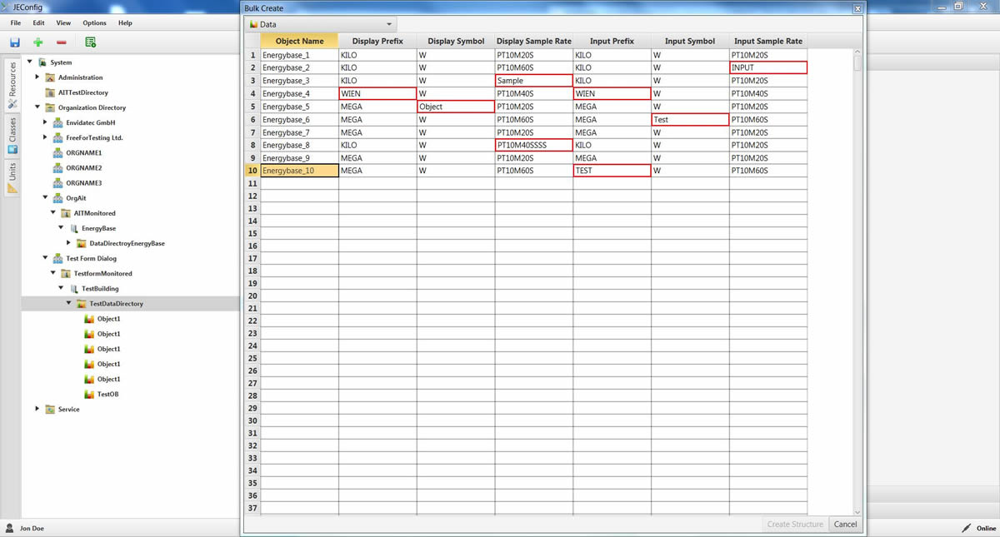
Here are some examples of possible correct inputs.
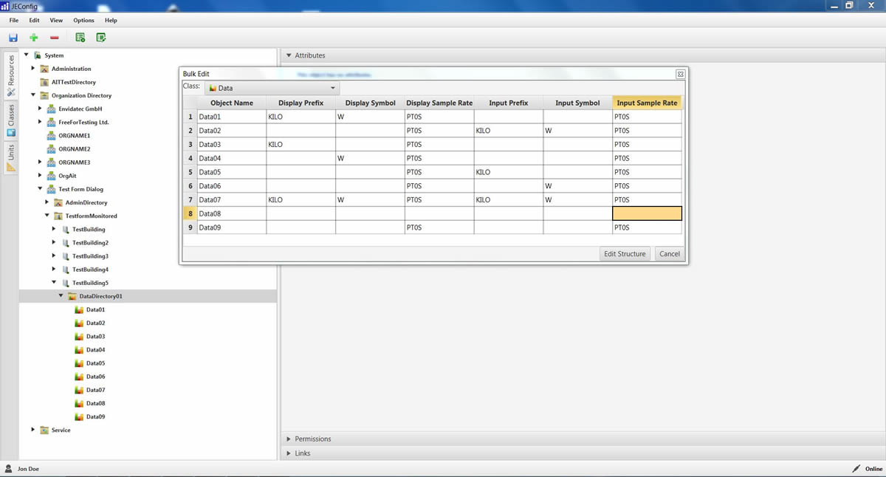
Checkbox value on the table
The allowed values are for a checkbox 0 and 1.
0 means it is not selected.
1 means it is selected.
WIZARD
Structure for a manual setup :
- Monitored Object Director
- Building
- Data Directory
- Data
- Data Source Directory
- Server
- Data Point Directory
- Data Point (Attribute : Target, Value Identifier)
- CSV Parser
Structure for a automated setup :
- Monitored Object Director
- Building
- Data Directory
- Data
- Data Source Directory
- Server
- Data Point Directory
- Data Point (Attribute : Target, Value Identifier)
- JSON Parser
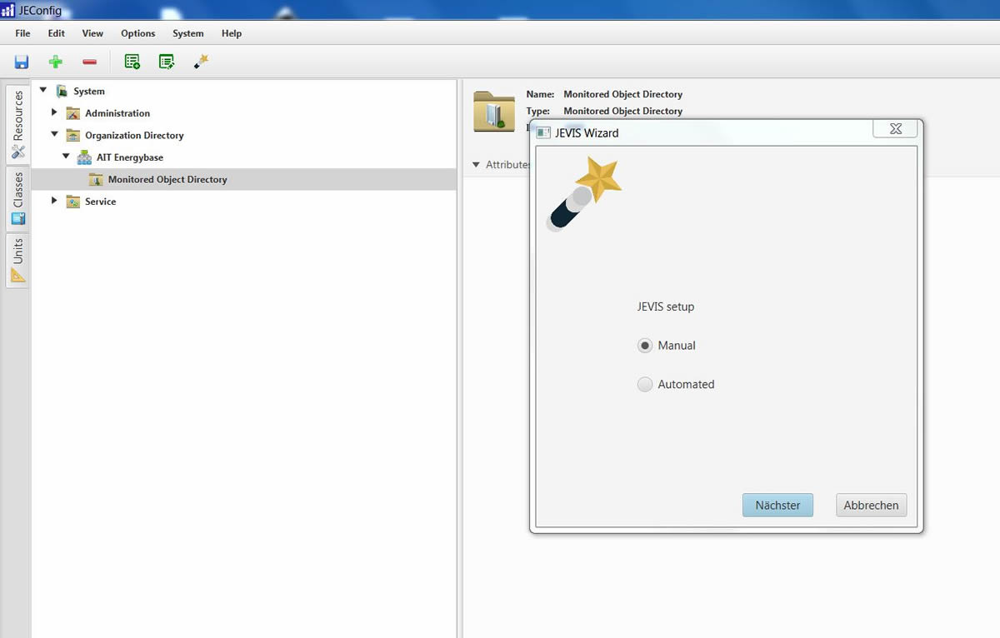
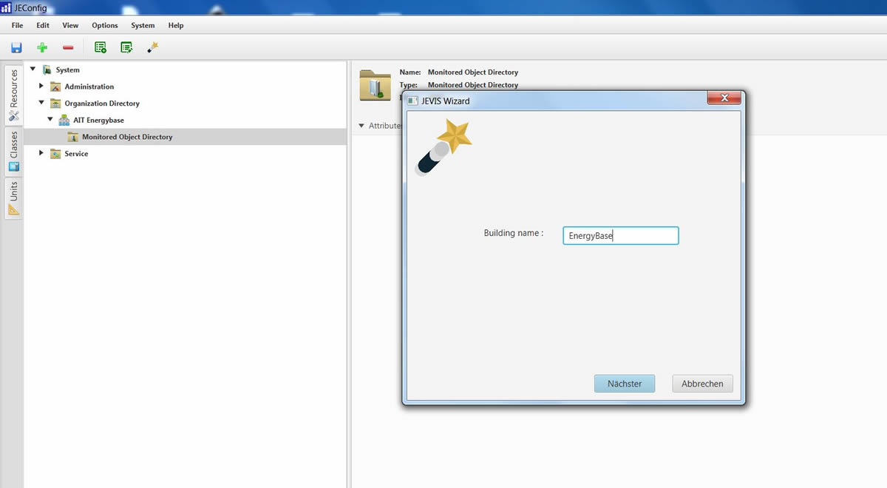
Manual Steps :
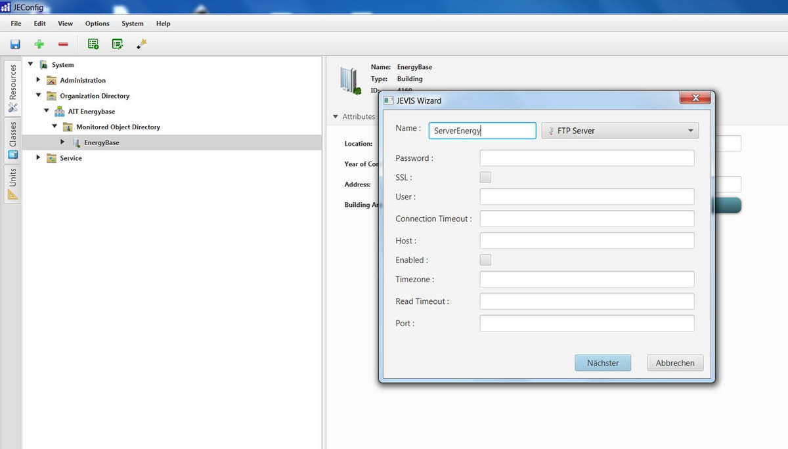
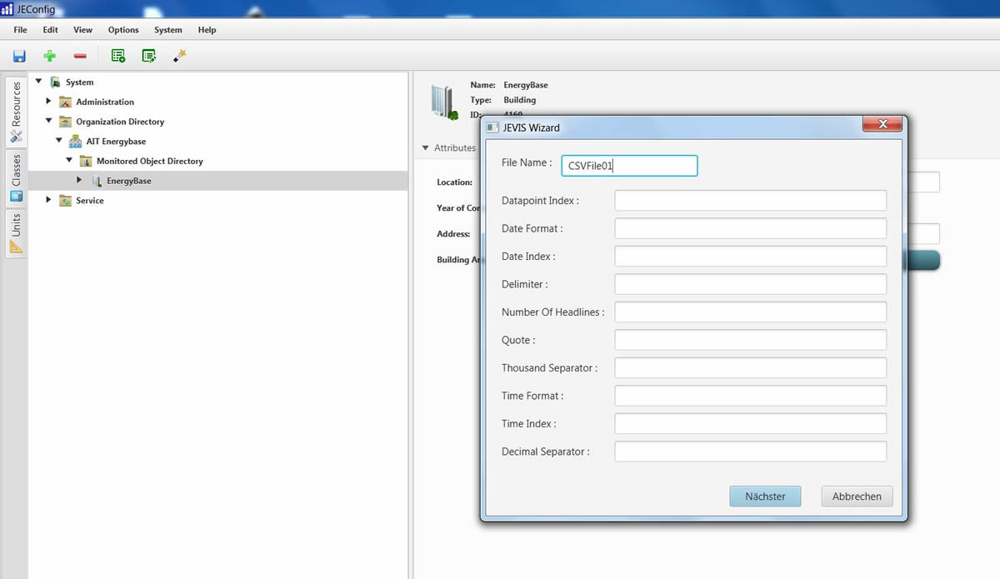
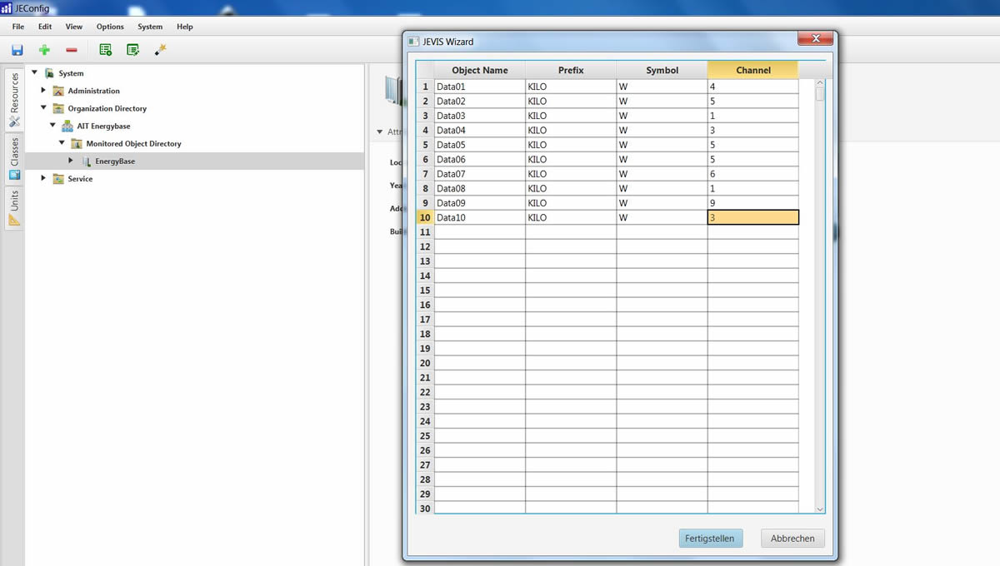
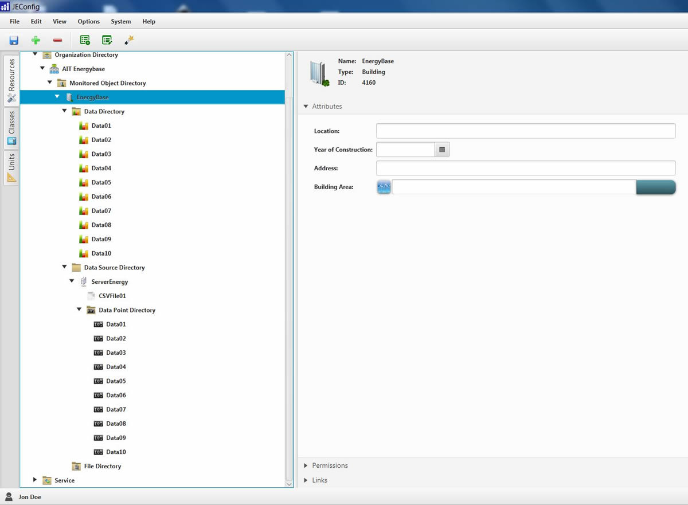
Automated Steps :
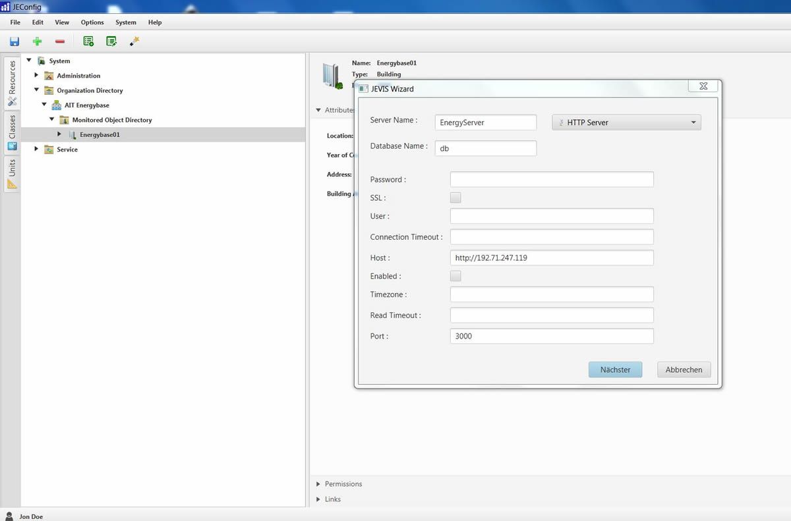
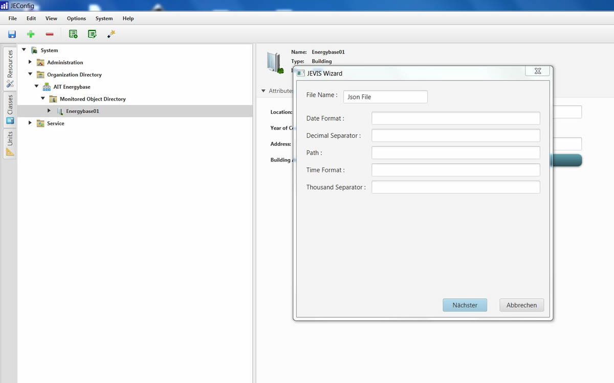

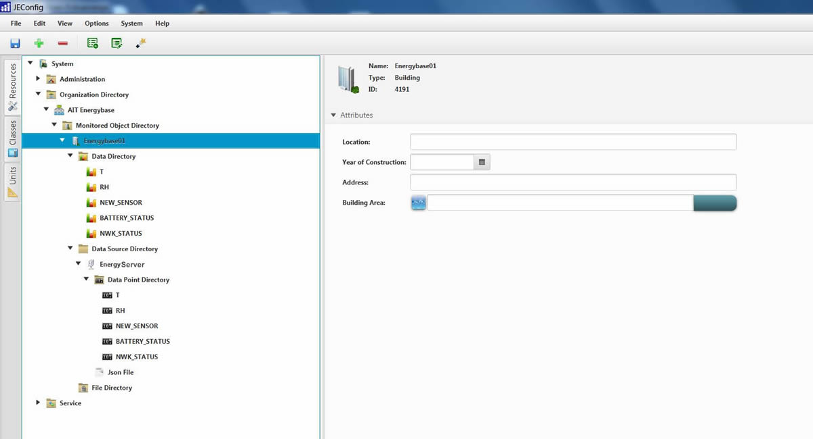